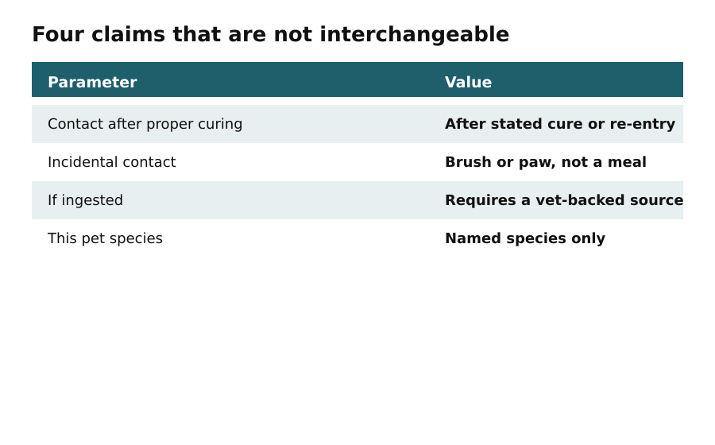

Day 1
Pet-safe does not mean risk-free
In this apartment
Situation: A renter in a Pune 1BHK balcony — used here as a compact-rental illustration — buys a 'pet-safe' stain and a 'non-toxic' herb kit for a dog and a rabbit.
Labels name a marketing category. They do not replace species, ingredients, and exposure checks.
Today's output: a written safety note for this project, plus which of the four exposure claims you will actually try to meet.

Keep pets off wet finishes, open bags of soil amendment, and plants you have not identified. If a pet chews, vomits, seizes, or shows sudden distress, that is a veterinary problem, not a design tweak.
Do not use pet-safe, non-toxic, certified, organic, or low-VOC as synonyms. Write the product name, the pet species, and the exposure you expect (paw, fur, chew, graze).
Do this
- Write the four exposure claims
- Name species on the project
- File the safety note
Today's output
- Write the four exposure claims
- Name species on the project
- File the safety note